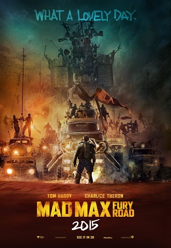

| Movie Title | Mad Mad: Fury Road |
|---|---|
| Director | George Miller |
| Leading Actor | Tom Hardy |
| Rating | Rated R |
| Description | A woman rebels against a tyrannical ruler in postapocalyptic Australia in search for her home-land with the help of a group of female prisoners, a psychotic worshipper, and a drifter named Max. |
| Movie Review's | Rotten Tomatoe's Review's |
| Cover Art |  |